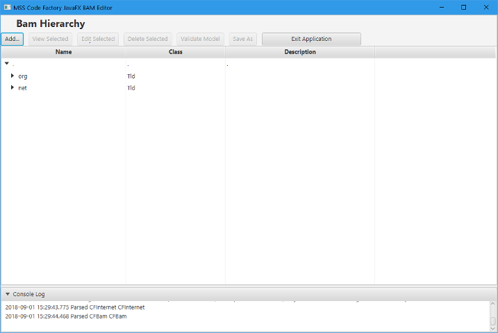
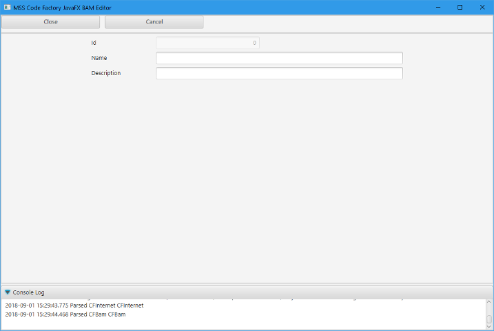
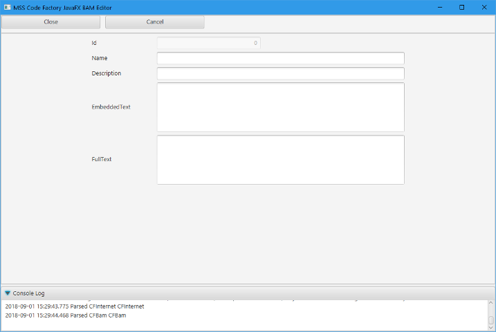
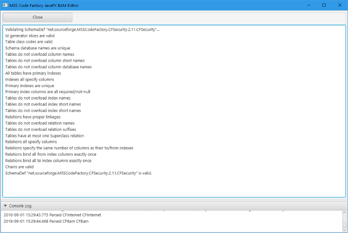

MSS Code Factory 2.11: Mark Stephen Sobkow's Code Factory
MSS Code Factory 2.11: Mark Stephen Sobkow's Code Factory
| Prev | Documentation Home | Next |
The network hierarchy form is the first one you see when you launch the CFBam Editor. From here, you can add internet object nodes, licenses, and schema definitions (you should only have one of those per model.)
With a schema selected, you can also validate the schema's design, and save the schema to a file. When you save a schema, a default file name is produced and the save dialog starts in the first directory on your model path from the $HOME/.msscfrc file.
Which objects you can add to a given node varies based on the type of node currenty selected. The nesting levels are limited -- you can define a TLD, a Top Domain, a Domain, a Top Project, a Sub Project, and then your Major Version and Minor Version nodes. That is usually quite sufficient for locating source code ownership within a company domain, so no further levels are allowed.

A TLD node is an internet top level domain -- usually .com, .net, .org, .mil, or a two-character country domain.

A Top Domain the name of the domain that was registered with a domain name registration service provider. You can provide a description for the domain for the sake of documentation, but it is not used by the rule base during processing.
Licenses are typically set up for a given company, or are from some internet publication like Apache.org's Apache V2 license or GNU.org's GPLv3. When you add a License, it is the Embedded Text that is important -- this text gets incorporated in the headers of the files produced by the manufacturing process.
Because those headers include XML and HTML documents, you must not include any unescaped markup characters in the embedded text, or you'll have trouble with invalid documents.

You must always define a Top Project for a business application model. This name is used to build the name of your project's source tree. As with most names in a business application model, the Name has to be camelcase. That is, it has to start with an uppercase character and include one or more lowercase characters in the remaining part of the string.
You can define Sub Projects as well. These are used to allow you to have several schemas modelled under a single project tree, each of which will have its own independent persistent storage server provisioned. Note that there would be no transaction coordination between those stores if you were to access more than one from a given application; each store is completely independent of the others.
I have never modelled a project without specifying both the Major and Minor Version numbers, with both of those being integers. I strongly recommend that you do so as well, and that you not specify "0" as a version. You are free to try manufacturing a project that does not specify major and minor version numbes, but I have no idea how the factory will react to a specification that lacks them.
There should be one and only one schema defined for a given model file. While the rule base does allow for there to be more than one schema defined by a business application model file, the CFBam Editor does not.
The database name for a schema should not be more than 8 characters, as some databases do not allow schema file names longer than that. However, because nothing requires that you deploy your application on all of the supported server technologies, you are not forced to limit yourself to 8 characters. Just be aware that it can cause problems should you decide to use alternative database technologies in the future.

Validating a model helps to ensure that your model will result in valid code when you manufacture it. However, due to the complexity of the rule base, validation does not guarantee success. It just catches the most common mistakes and oversights that people make when modelling an application schema.
